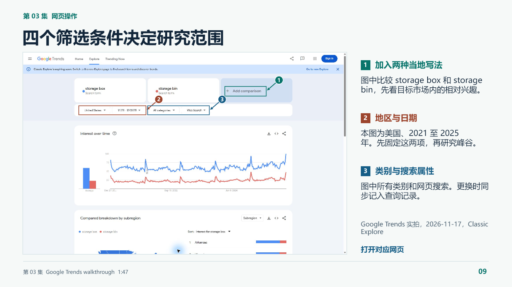
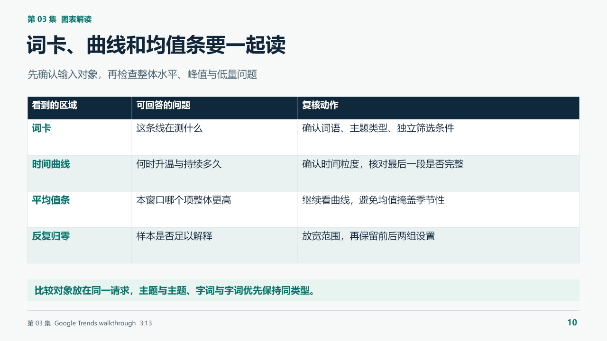
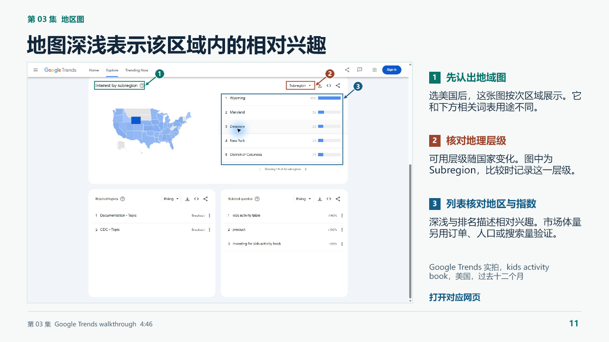
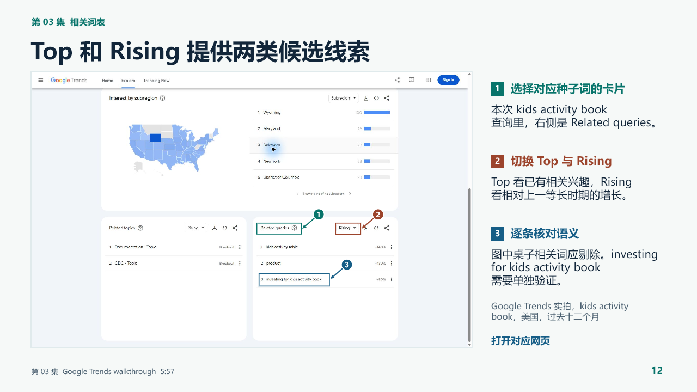
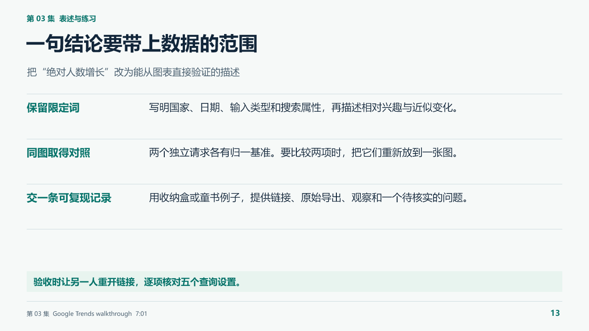

网页操作与读图
五页中文样章，从固定筛选条件到提交一条可复现的研究记录。操作截图里的编号、框和箭头对应旁边的文字。
截图是 2026-11-17 的 Classic Explore 历史教学记录。新版页面和登录条件按实际入口核对。教学查询中出现的词不代表当前商机。点击图片可查看原尺寸。
1. 固定四个筛选条件
① 确认两种当地叫法；② 固定国家和日期；③ 固定类别与搜索属性。先确认研究范围，再解释曲线。

历史操作记录：美国，storage box / storage bin，2021–2025，网页搜索。
2. 词卡、曲线和均值条一起读
输入类型决定测量对象，曲线显示何时变化，均值条帮助观察整体水平。反复归零需先检查数据量。比较对象尽量放在同一个请求中。

3. 地图深浅表示相对兴趣
① 找到地域卡片；② 确认 Subregion 等地理层级；③ 看列表中的地区和指数。更深的颜色不直接表示更多购买人数。

kids activity book 的历史教学查询，截图采集于 2026-11-17。
4. Top 与 Rising 生成候选线索
① 定位种子词的 Related queries；② 切换热门与飙升；③ 逐条核对语义。示例中的桌子类词偏离童书任务，应剔除。高增长仍需检查基数与长期走势。

5. 一条结论带上数据范围
练习：任选收纳盒或儿童活动书，写清国家、日期、输入类型、类别和搜索属性，保留查询链接与 CSV，写出一个观察和一个待核实问题。用证据模板填写实际记录。
